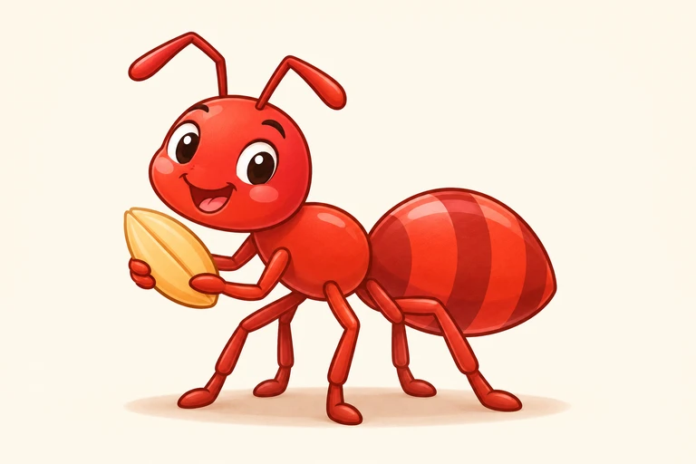
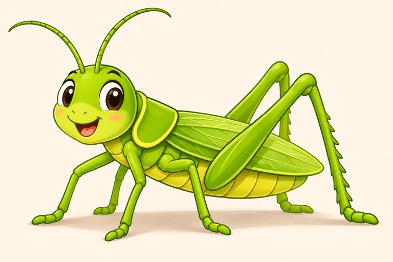
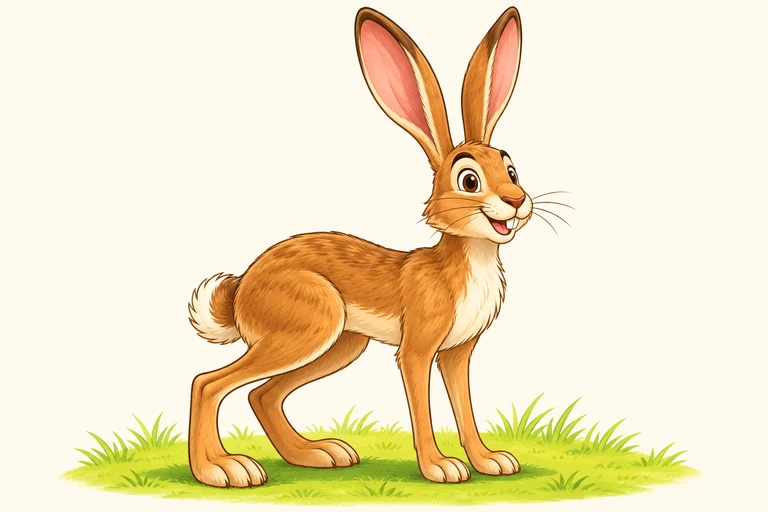

ant
con kiến
ANT
The ant is a main character.
Chưa đánh dấu
Unit 17 · Học trước, thử nhớ rồi luyện đề
Nhận biết nhân vật, nghe kể ngắn, hỏi How did…? và luyện cách kể hành động đã qua.
Unit 17 có âm thanh đi kèm (giọng máy Anh Mỹ). Em có thể nghe dù máy chưa cài giọng Anh. Nếu lỗi mạng, bấm nghe lại hoặc chọn giọng thiết bị nếu có.
Bấm Nghe khi em sẵn sàng. Trang không tự phát âm thanh.
Nghe cả từ/cụm, đọc theo rồi dùng ABC để nhớ cách viết. ABC đọc tên chữ cái, không phải bài luyện âm. Với cụm nhiều từ, các nhóm chữ được tách riêng.
Chưa có từ cần ôn. Em chọn một nhóm rồi bấm “Cần ôn lại” ở từ muốn luyện thêm nhé.

con kiến
The ant is a main character.
Chưa đánh dấu

con châu chấu
The grasshopper is a main character.
Chưa đánh dấu

con rùa cạn
The tortoise is a main character.
Chưa đánh dấu

con thỏ rừng
The hare is a main character.
Chưa đánh dấu
con cáo
The fox is in the story.
Chưa đánh dấu
con quạ
The crow is in the story.
Chưa đánh dấu
Bạch Tuyết
Snow White cooked well.
Chưa đánh dấu
bảy chú lùn
The seven dwarfs are in the story.
Chưa đánh dấu
nấu ăn giỏi
She cooked well.
Chưa đánh dấu
làm việc chăm chỉ
He worked hard.
Chưa đánh dấu
chạy nhanh
He ran fast.
Chưa đánh dấu
hát hay
He sang beautifully.
Chưa đánh dấu
nhân vật chính
Who are the main characters?
Chưa đánh dấu
truyện cổ tích
I am reading a fairy tale.
Chưa đánh dấu
sách truyện
Is this your storybook?
Chưa đánh dấu
đã thắng cuộc đua
The tortoise won the race.
Chưa đánh dấu
Nghe hội thoại rồi đọc theo. “Đến lượt em” chỉ đọc A để em nói câu trả lời của B.
A: Who are the main characters in the story?
B: They are the ant and the grasshopper.
Đọc đúng truyện trên thẻ.
A: Who are the main characters?
B: They are the tortoise and the hare.
Không nhầm hare với tortoise.
A: How did he run?
B: He ran fast.
Did + run; câu kể ran.
A: How did she cook?
B: She cooked well.
Did + cook; câu kể cooked.
A: Is this your storybook?
B: Yes, it is.
Câu hỏi Yes/No lên giọng như Lesson 3.
A: Do you like the story?
B: Yes, I do. I like the ant.
Sở thích cần dựa lời người nói, không tự gán nhân vật tốt/xấu.
Ví dụ tự soạn. Vị trí và sở thích là giả định theo từng ví dụ. Trang không thu âm hoặc tự chấm giọng của em.
Mỗi nhóm có bốn bài nhỏ, không giới hạn thời gian. Em được sửa rồi thử lại. Câu trả lời tự lưu để quay lại làm tiếp.